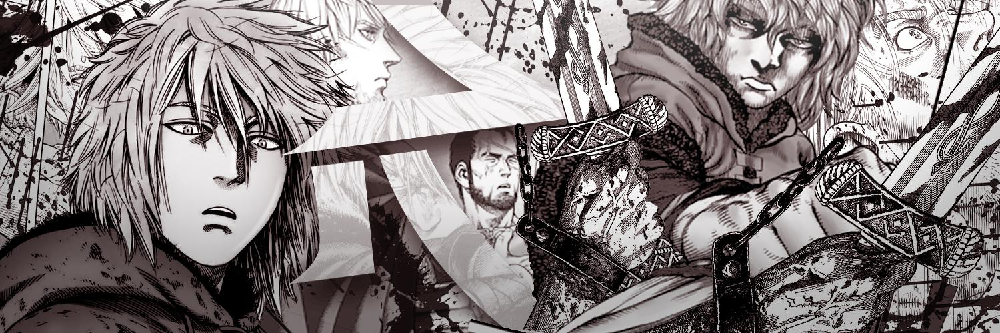
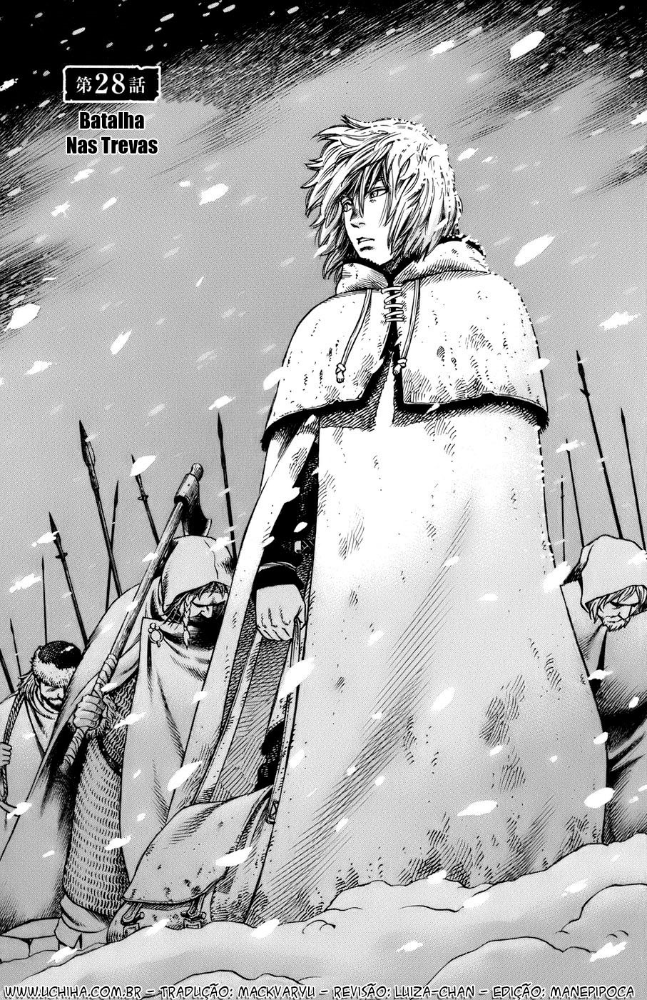
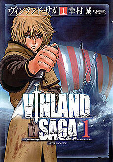
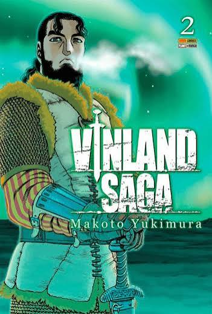
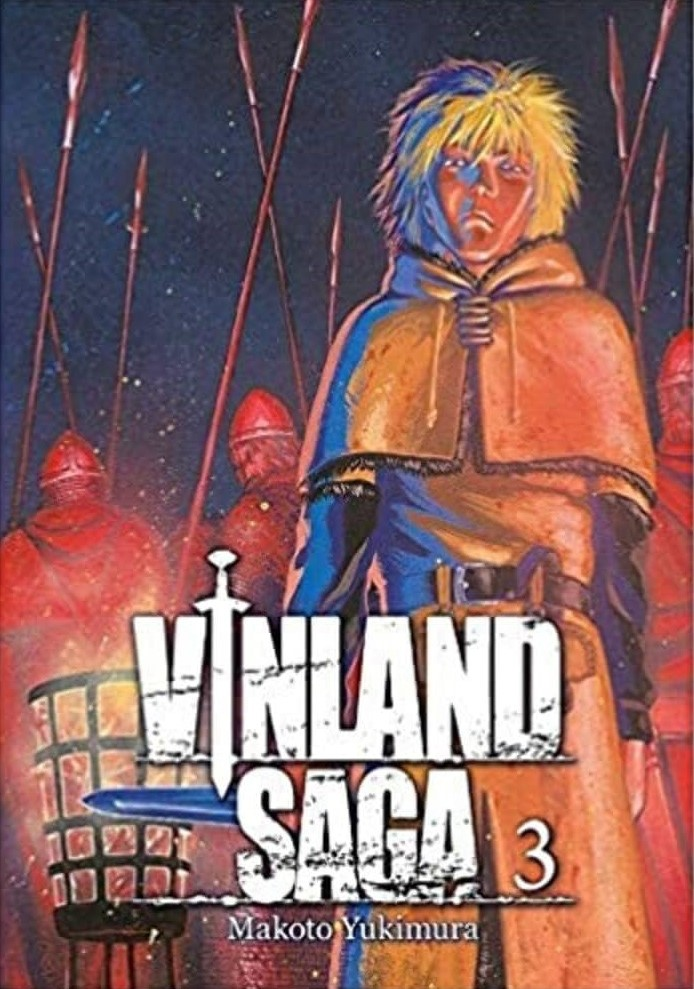
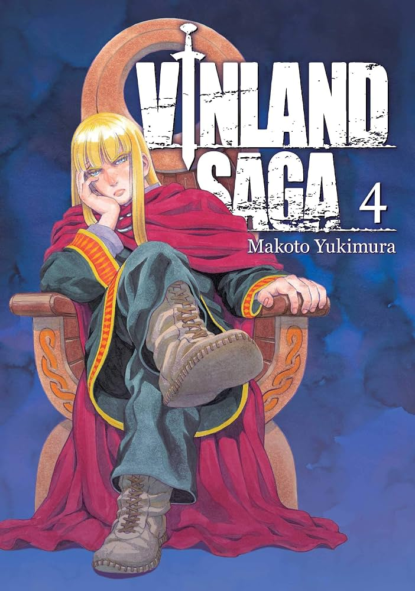
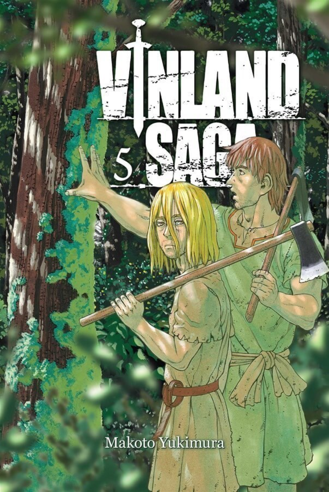

Criado por Makoto Yukimura e serializado desde 2005 (inicialmente na Weekly Shōnen Magazine e depois na Monthly Afternoon), o mangá de Vinland Saga expande a narrativa além do anime, levando a jornada de Thorfinn do continente europeu até o Novo Mundo.

Sinopse: Apresentação de Thorfinn já jovem, atuando ao lado do bando de mercenários de Askeladd durante um ataque na Inglaterra. Revela a habilidade impressionante de Thorfinn em combate e seu acordo com Askeladd: uma luta em troca de um duelo honrado.

Sinopse: O capítulo faz um salto no tempo para a infância pacífica de Thorfinn na Islândia. Apresenta sua família, seu pai Thors (um homem respeitado e misterioso) e o marinheiro Leif Erikson contando histórias sobre uma terra lendária, rica e sem guerras chamada Vinland.

Sinopse: A rotina pacífica da vila é interrompida pela chegada de um navio de guerreiros Vikings (os Jomsvikings). O passado militar de Thors começa a vir à tona quando ele é convocado de volta às batalhas.

Sinopse: Thors prepara uma pequena tripulação para responder ao chamado de guerra, tentando proteger seu vilarejo. Escondido no navio de mantimentos, o pequeno Thorfinn se esgueira a bordo para acompanhar o pai.

Sinopse: A embarcação de Thors cai em uma armadilha armada por Askeladd a pedido de Floki. Thors demonstra sua força sobre-humana — conhecida como "O Troll de Joms" — lutando sem matar ninguém para ensinar a Thorfinn o valor de uma vida.

© Projeto de front-end acadêmico de Tiago Almeida de Abreu baseado no mangá e anime de Makoto Yukimura. Todos os direitos reservados aos estúdios e autores originais.